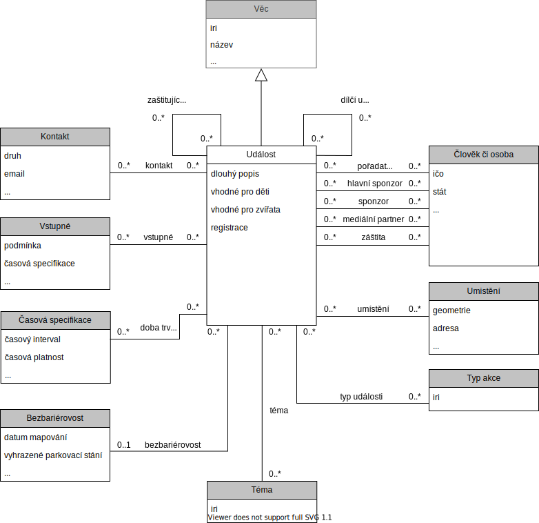

Tento dokument je otevřenou formální normou ve smyslu § 3 odst. 9 zákona č. 106/1999 Sb., o svobodném přístupu k informacím, pro zveřejňování událostí jakéhokoliv druhu a rozsahu - od jednorazových farmářských trhů až po vícedenní festivaly. Norma umožňuje pokrýt události organizované jak soukromým tak veřejným sektorem.
Norma je ilustrována příklady dat ve formátu JSON-LD [[json-ld11]], a tedy i JSON [[ECMA-404]].
Přehled

Diagram datového modelu událostí
.
Šedě podbarvené části jsou specifikovány jinými otevřenými formálními normami, nebo se jedná o číselník. Vazby bez kardinalit(šipka) reprezentují dědění vlastností a vazeb třídy Věc.
Specifikace
V této sekci jsou definovány jednotlivé třídy a jejich vlastnosti potřebné pro popis událostí.
Pro každou vlastnost je uveden její identifikátor, který je pro její reprezentaci použit ve všech datových formátech, její název, datový typ, popis a příklad. Všechny třídy, které nejsou specifikovány jinou otevřenou formální normou nebo číselníkem, dědí vlastnosti a vazby třídy Věc.
Událost
Tato třída reprezentuje samotnou zveřejněnou událost. Kromě níže specifikovaných vlastností a vazeb je možné u této třídy použít také vlastnosti a vazby třídy Věc, která je specifikována otevřenou formální normou Věc.
Podrobný popis události, nad rámec běžně užívaného, stručného a krátkého popisu. Krátký popis pro událost je zachycen vlastností popis, kterou třída událost dědí od třídy Věc.
Příklady
První Znojemské historické vinobraní se uskutečnilo již v roce 1966. Jeho autorem a zakladatelem byl František Koukal, který dokázal ve svém scénáři skloubit jak slavnou minulost královského města na řece Dyji, tak i jeho zachovalé historické kulisy a vinařskou tradici.
Ústřední postavou vinobraní se stal král Jan Lucemburský, který do Znojma v roce 1327 přijel zapít zdařilé státnické jednání ve Vratislavi. Město pro něj tehdy připravilo bohatý program, jehož střípky, včetně tradičního předávání práv do rukou konšelů, se divákům nabízejí k zhlédnutí dodnes.
Zatím největší a nejúspěšnější ZHV se konalo v roce 1967. Originální program s téměř 600 účinkujícími zhlédlo na 110 000 návštěvníků. Tradice Znojemského historického vinobraní byla komunistickým režimem přerušena roku 1974 a k jejímu znovuobnovení došlo až v 90. letech minulého století.
Od té doby přiláká každoročně vinobraní do Znojma desetitisíce návštěvníků, kteří sem přijíždějí nejen za vínem a burčákem, ale také za výborným kulturním programem, ve kterém nesmí chybět průvod krále Jana Lucemburského s chotí a dvořany.
Vedlejší událost pořádána v rámci hlavní události. Obvykle se jedná o různé doprovodné události, jako například souteže a nebo performance show. Příkladem ale může být také jednání pracovní skupiny v rámci konference.
Zaštiťující událost v rámci které se událost koná. Typickým příkladem může být událost Dny Johanna Gregora Mendela konající se po celý rok 2021. Tato často dlouhodobější nebo komplexnější událost může zastřešovat konkrétní událost, kterou chceme publikovat pomocí OFN, jako například koncert na oslavu narození Johanna Gregora Mendela, který je pouze jednou z více akcí v rámci události Dny Johanna Gregora Mendela.
Příklady
V této sekci jsou uvedeny příklady reprezentace událostí v různých úrovních detailu, ve formátu JSON-LD [[!json-ld11]], a tedy i JSON [[!ECMA-404]].
Jednoduchá událost
Příklad ukazuje, jak lze prezentovat události s minimálními položkami k publikaci. Další položky lze přidávat dle potřeby.
Komplexní událost
V komplexním příkladu jsou uvedeny položky, které je vhodné vyplnit, aby měl uživatel co nejlepší představu o dané události. Další položky lze přidávat dle potřeby.
Více událostí
V příkladu je uveden seznam prezentující více událostí. Další položky lze přidávat dle potřeby.